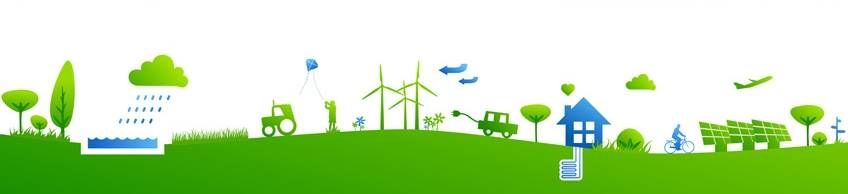

Green Team
About our Liason, Sybli Cranmer: As a person who has experienced many changes in environmental policies and even traveled abroad to attend environmental forums, Sybil is very knowledgeable in the environmental field and policies surrounding the topic. She helps the LAHS Green Team by using her experience to find organizations for potential partnership with the club. In addition, she helps find volunteer opportunties and personally participates in countless community services. She also attends conferences that discuss environmental issues at a global scale. Because of this, she has been a very resourceful member of the team and often contributes her own ideas to help formulate plans for club projects.
Green Team has worked tirelessly to make the Los Altos campus more eco-friendly, from installing solar-panels to making the labels on the trash can clearer. We meet every other Wednesday in room 408!